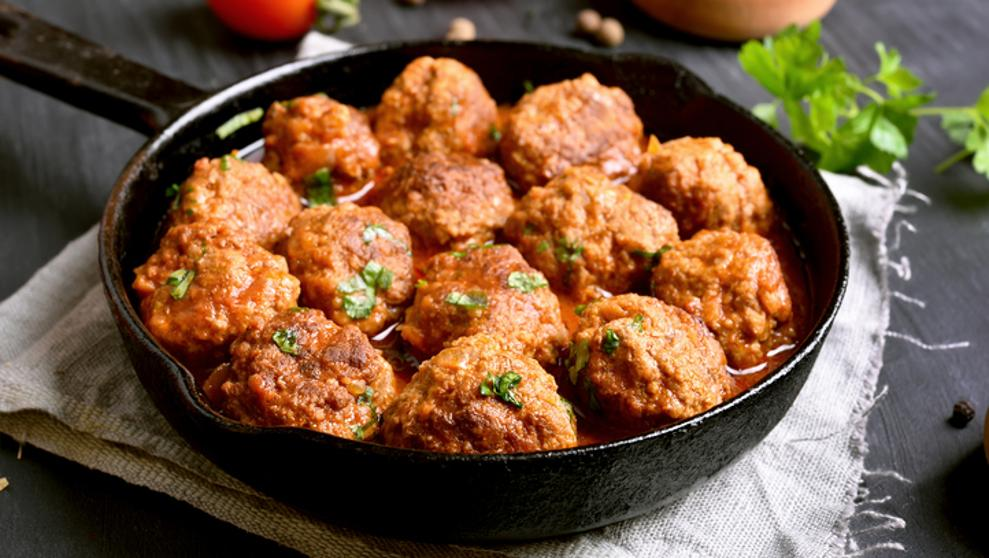

Cocina blog
preparate a cocinar
Yakisoba de pollo
24/06/2018
Yakisoba (焼きそば?), literalmente "tallarines fritos", son originarios de China (allí se conoce con el nombre chow mein) pero hoy en día están integrados enteramente en la cocina japonesa, tal como ocurre con el ramen.1 Aunque el término soba forma parte de la palabra el yakisoba estos fideos no se elaboran con harina de trigo sarraceno, sino que son muy similares a los ramen que son producidos a partir de harina de trigo.

Janice: hola la receta de yakisoba esta genial.

Martin:Voy a probarlos! tienen muy buena pinta
Salsa con Albondigas
14/06/2018
En Argentina, se preparan de tres modos distintos muy similares a la forma española: hervidas (para esto generalmente se rebozan con harina refinada de trigo). Fritas: se hacen con carne de vaca picada y un rebozo semejante al de las milanesas: con huevo, ajo, perejil y pan rallado. Después de freírlas ligeramente, se terminan de cocer en una salsa hecha tradicionalmente a base de un sofrito de cebolla, rodajas de cebolla, harina, vino blanco y especias; fritas (para esto se suelen rebozar con pan rallado) y; cocidas al horno. Se sirven generalmente como primer plato durante los inviernos y otoños con salsa, papas (patatas), arroz y carne.
Cl20: a cocinar!!

Lili:Ideales para el invierno!